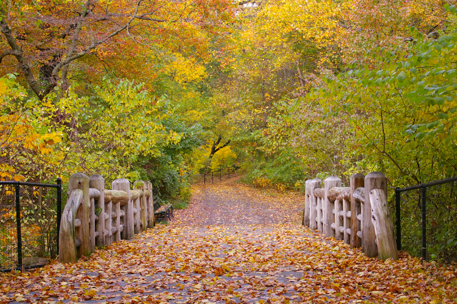
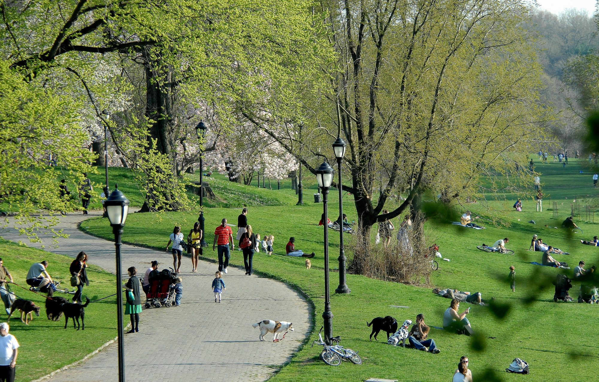

brooklyn new york Dit stadspark is met een flink aantal bomen, sportvoorzieningen, wandelpaden en een aangelegd meer vergelijkbaar met Central Park – dat eveneens werd ontworpen door Vaux en Olmsted. In het groene Prospect Park kun je een ritje maken in een vooroorlogs carrousel, rondstruinen in de dierentuin of een bezoek brengen aan Grand Army Plaza, een ovaal verkeersplein dat de parkingang markeert. Het plein is het startpunt van de Eastern Parkway; 's werelds eerste parkweg. Iedere zaterdag kun je hier een bezoekje brengen aan de versmarkt. Vanaf Prospect Park/Grand Army Plaza is het een klein stukje lopen naar de Brooklyn Public Library, het Brooklyn-museum en de botanische tuin van Brooklyn. Doorgaans is Prospect Park minder drukbezocht dan Central Park.
 